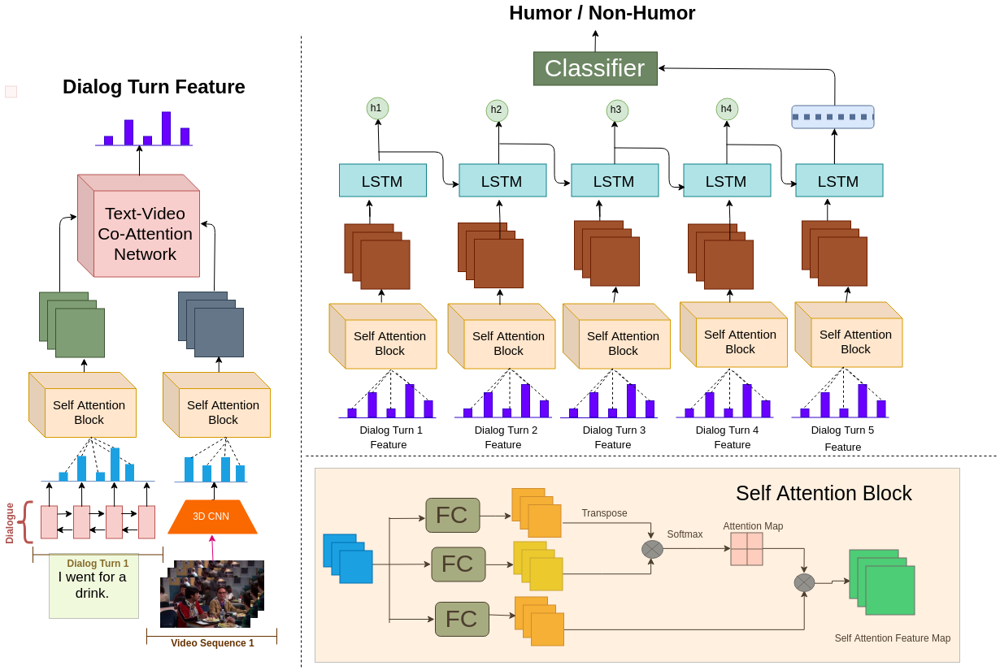
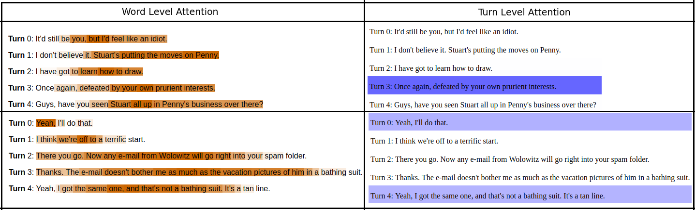

Multimodal Humor Dataset: Predicting Laughter tracks for Sitcoms
Badri N. Patro1* Mayank Lunayach1* Deepankar Srivastav1 Sarvesh1 Hunar Singh1 Vinay P. Namboodiri1
1IIT Kanpur, *equal contribution
In WACV 2021
Task example
Download Dataset
- Dataset sample (consisting of randomly sampled 400 dialogues)
-
Full dataset (compressed in a zip file)
The dataset folder has the following directory structure:
|-- DT_{N}where
| |-- Raw
| | |-- S{M}
| | | |-- The Big Bang_S0{M}{I}.json
| |-- test.json
| |-- train.json
| `-- val.json
Nis the no. of dialogue turns for that sub dataset,Mrepresents the season of the series (varies from 1 to 5) andIrepresents the episode number in that season (like 01, 02, and so on). Episode level extracted dialogues are in theRawfolder. Dialogues split into the train, val, and test categories are intrain.json,val.json, andtest.json, respectively.
Additional Plots/Figures

|
| A tSNE plot made by randomly selecting 1500 images (each from Humorous and Non-Humorous set) as the last frame of some visual dialog turns. Sometimes these visual models could cheat by detecting some pattern inHumorous/Non-Humorous visual dialogs like specific camera angle etc. The above plot hints towards its absence.To visualize the plot better, each image is represented by a dot and the corresponding plot is shown below. (Currentplot is slightly scaled up to ease the visibility.) |

|
| A green dot represents a humorous sample and red dot, a non-humorous sample. They seem to be randomly distributed, hinting towards absence of any such bias. |

|

|

|

|

|

|

|

|

|
| The figure showing average time per turn in a Dialog, across the Dataset. | The figure showing average dialog time, across the Dataset. | The figure showing contribution of each speaker in generating humor, across the Dataset. |
MSAM model
|  |
Qualitative results

|
Explaining humor
|  |
Baseline Models

|

|
| Text based Fusion Model (TFM) | Video based Fusion Model (VFM) |

|

|
| Text based Attention Model (TAM) | Video based Attention Model (VAM) |